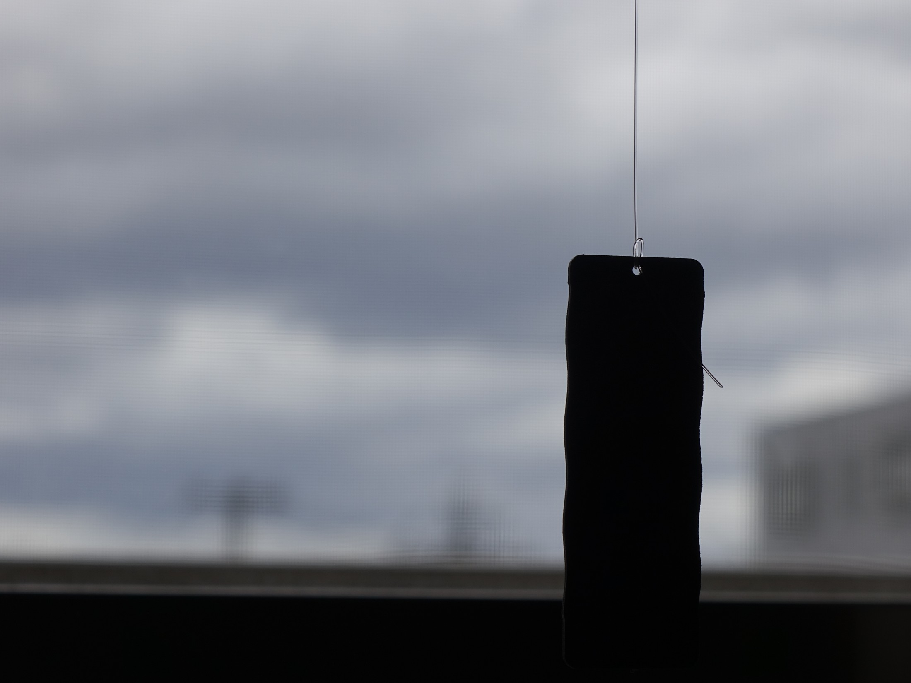
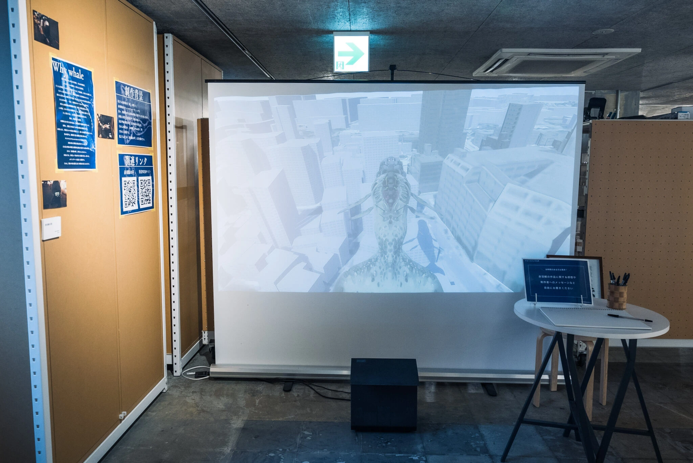

Wind Garden
An installation that tunes a room for the arrival of wind. Suspended, computationally shaped surfaces and threads register a breeze as timing: a pause before motion, a delayed turn, a tremor, a touch, a return to stillness.
Portfolio / Works
Selected creative works, exhibitions, and engineering activities around media technology, embodied interfaces, and public-facing interactive systems.

An installation that tunes a room for the arrival of wind. Suspended, computationally shaped surfaces and threads register a breeze as timing: a pause before motion, a delayed turn, a tremor, a touch, a return to stillness.

Field recordings around Akabane are treated as the voice of an imagined urban whale and translated into sonic and visual expression.
Exhibition and research activity around historical understanding, self-salience, and media experience. Related to the ADADA 2025 paper on face morphing and viewing a Nagasaki atomic bomb film.
Backend and infrastructure support for a charity concert with audience-participatory realtime visuals, including nginx, web server configuration, and local network server operation.